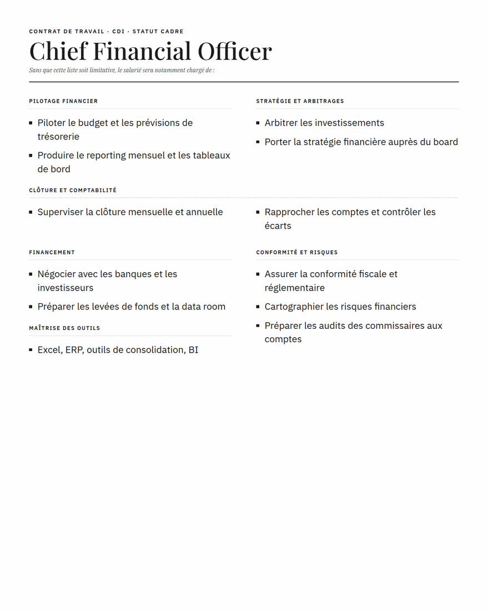
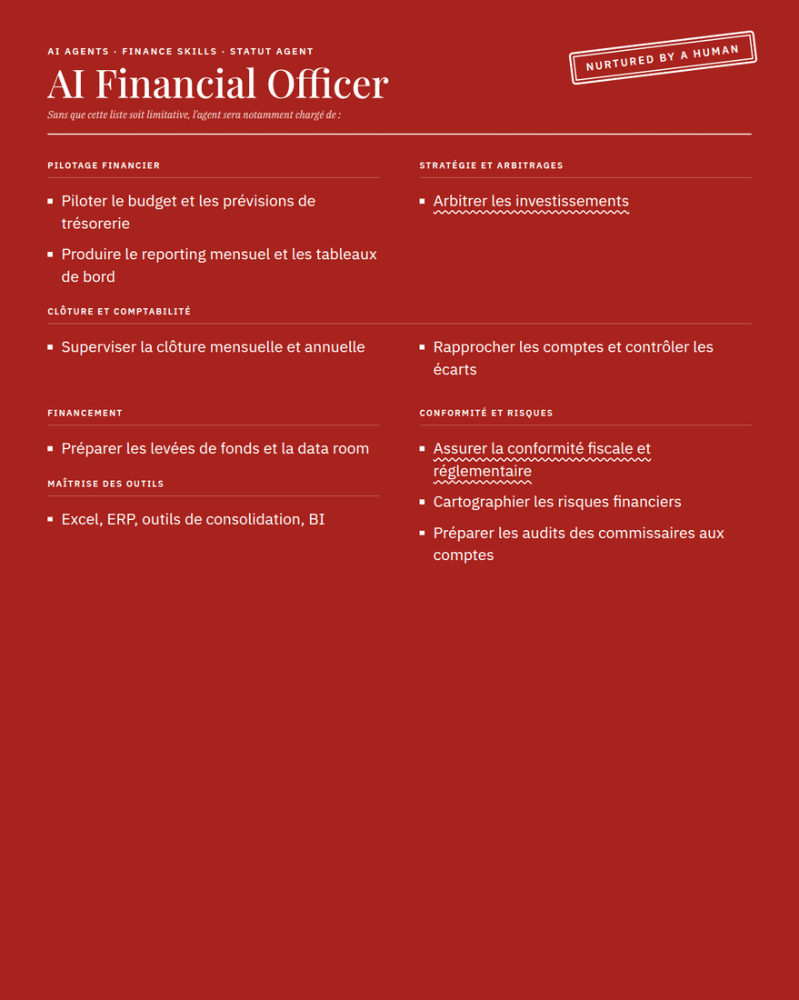
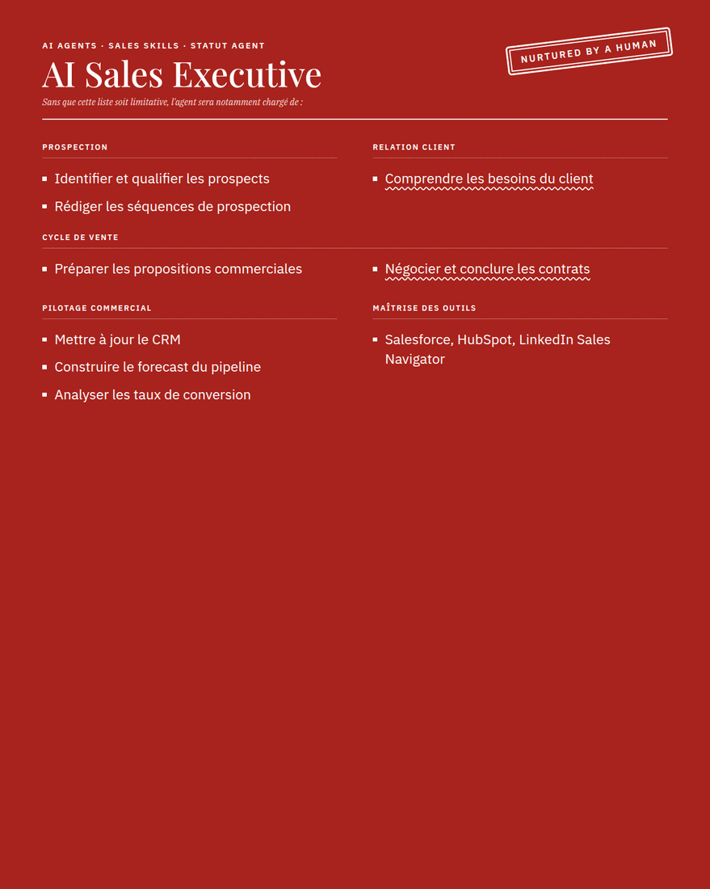
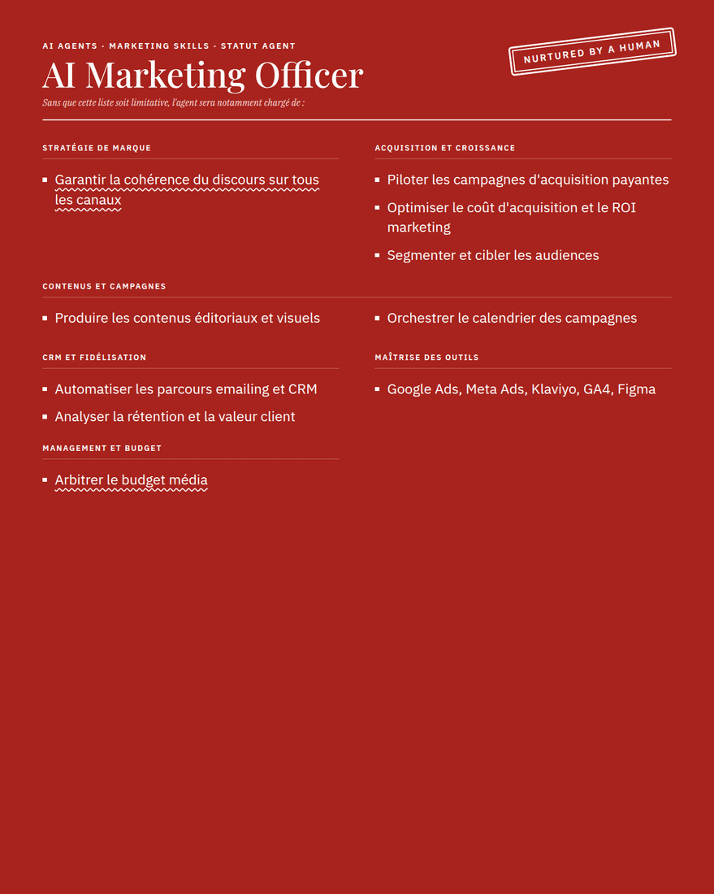
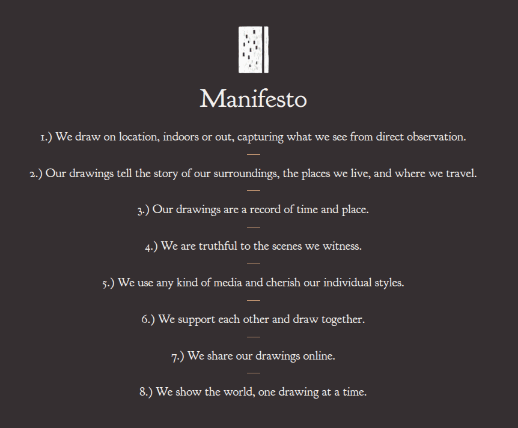
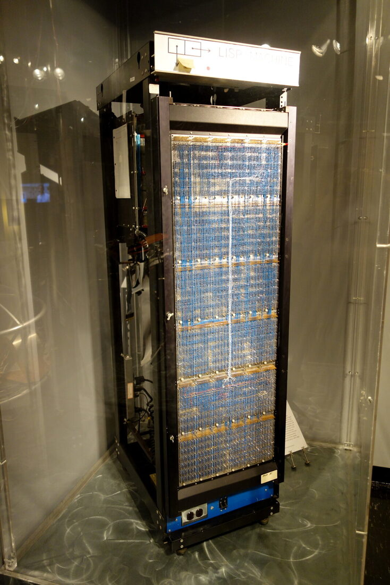

Si vous en avez une. Pendant vingt mois, j'ai déployé la même stratégie agentique dans deux organisations que tout sépare, et j'ai obtenu deux résultats opposés. Ce que les agents ont dissous chez l'une n'existait pas chez l'autre.
Par Alexis Blandin · 20 min de lecture
Ce texte reprend la conférence « AI will make your organization obsolete. If you have one. », donnée le 16 novembre 2026 à la Forward Data Conference.
Il y a un tableau dont je n'arrive pas à me défaire. C'est le Baptême du Christ, peint vers 1475 dans l'atelier florentin d'Andrea del Verrocchio, qui était à la fois peintre, sculpteur et orfèvre. Le sujet n'a rien d'original, et le tableau serait resté une pièce honnête de la Renaissance s'il n'était pas entré dans la légende à cause d'un détail, tout en bas à gauche.
À l'époque, l'artiste au sens où nous l'entendons n'existe pas encore. Verrocchio est un artisan qui dirige une bottega, un atelier où l'on entre enfant et où l'on apprend tout, du broyage des pigments au dessin, à la sculpture et à la peinture. Quand une commande arrive, le maître répartit le travail, le fond à l'un et les bâtiments à l'autre, si bien que tout le monde finit par savoir à peu près tout faire.
Le détail, c'est l'ange de gauche, celui qui tient les vêtements du Christ. La légende veut que Verrocchio l'ait confié à un jeune apprenti, et que l'exécution en ait été si parfaite que le maître aurait posé son pinceau pour ne plus jamais peindre. Cet apprenti, tout le monde le connaît, il s'appelait Léonard de Vinci.

Cette histoire me revient chaque fois que j'entends parler d'un ingénieur qui a arrêté de coder, écrasé par son Léonard à lui. On en entend beaucoup depuis 2025, et tu as peut-être déjà rencontré le tien. Mais l'histoire de Verrocchio cache autre chose, et j'y reviendrai à la fin.
Ces vingt derniers mois, j'ai eu la chance de piloter la data de deux organisations que tout sépare. La première est Jolimoi, une beauty tech parisienne. La seconde est Urban Sketchers, une ONG américaine présente sur les cinq continents, qui promeut le dessin sur le vif. Dans les deux, j'ai eu carte blanche pour déployer quasiment la même stratégie agentique, avec les mêmes outils, et j'ai obtenu deux résultats complètement opposés.
Ce sont deux organisations de petite taille, observées sur une période précise, et nous y avons fait des erreurs, ce qui n'étonnera personne vu la jeunesse de l'IA agentique. Je laisse la technique de côté pour regarder l'organisation du travail, qui ne se confond pas avec l'entreprise.
Une organisation du travail réunit des êtres humains autour d'un objectif commun, avec tout ce qu'on invente pour les y amener. Ses règles, ses prescriptions, ses procédures et ses processus servent à structurer, définir, répartir et coordonner. C'est elle que les agents bousculent, et toute la question est de savoir ce qu'il en restera.

Faire à deux le travail de sept.
Chez Jolimoi, tout s'est enchaîné comme une rangée de dominos, et le premier est tombé avant même l'arrivée des agents. Au plus fort de son activité, l'entreprise comptait une centaine de salariés, et l'équipe data sept personnes aux expertises bien segmentées, du data engineering à la BI en passant par la data science et l'analytics engineering.
Puis il nous est arrivé ce qui arrive à beaucoup d'entreprises, une contraction économique sévère, par étapes. À partir de l'été 2025, les départs n'ont plus été remplacés, et l'équipe est passée de sept à deux personnes.
L'IA, nous l'avons accueillie à bras ouverts. Les LLM d'abord, puis les premiers agents capables de lancer des commandes et de chercher par eux-mêmes, ont absorbé les tâches de ceux qui partaient, au point que nous faisions à deux ce que nous faisions à sept. Il faut le dire sans détour, l'IA peut remplacer des personnes, et dans notre cas elle a dépassé nos attentes. Mais à ce stade, nous le faisions pour nous, un peu égoïstement, pour tenir la charge qui nous incombait.

Quand faire coûte moins cher que planifier.
Le deuxième domino est plus intéressant, parce qu'il commence par une bonne nouvelle. À mesure que la qualité des agents montait, de mois en mois, nous avons commencé à avoir du temps libre. Une organisation qui n'est pas pensée pour absorber ce temps fait ce qu'elle sait faire, elle va plus vite. Nous avons donc pris de plus en plus de sujets, et nous avons cessé de dire non.
L'autre effet m'a davantage dérangé. Nous sommes allés trop vite pour nos propres pratiques, des pratiques saines pourtant, qui n'avaient jamais posé problème.
Plutôt que de spécifier une idée, nous la livrions, parfois en deux, trois ou cinq versions parallèles, portées par des personnes qui n'avaient pas forcément la compétence au départ, juste pour voir ce que cela donnait. Le pire, c'est que ça marchait. À la fin, il ne restait d'une spécification qu'une note d'intention, l'équivalent d'un post-it.
Ce gain avait un revers que nous n'avons pas vu tout de suite. Nous produisions davantage, mais le goulot d'étranglement s'était déplacé de l'analyse vers la relecture, puis vers les métiers, qui ne suivaient plus. La difficulté était devenue d'ingérer ce que nous produisions, et le goulot remontait une à une les strates de l'organisation.
Il y avait aussi les personnes. C'était encore nous, humains, qui faisions l'interface avec les agents pour les faire avancer, et nous ne nous arrêtions jamais. On connaît l'image de la machine à sous, où l'on relance, puis relance encore, parce qu'il reste toujours un dernier truc à faire, et l'agent ne se fatigue jamais. Nous ne voulions pas freiner la vélocité gagnée, et nous nous sommes enfermés nous-mêmes. Nous en avons été les premières victimes, si bien que je pose désormais la question à tous ceux qui me parlent de leurs agents : que fais-tu, toi, quand ils travaillent pour toi ?
Tout cela restait invisible au reste de l'entreprise, parce que nous avancions en sous-marin et que chaque métier ne voyait que son morceau du décalage. Il a fallu un déclic, et il a duré dix minutes.

Le graal du self-service, et son prix.
Jusque-là, le gain restait personnel et cantonné aux équipes techniques. Après le déclic, alors que la contraction continuait et que nous n'étions plus qu'une trentaine dans l'entreprise, une seule question comptait. Pouvions-nous donner cette capacité, avec cette qualité, à tout le monde ?
Nous avons décidé ensemble de la déployer dans toute l'entreprise, avec un objectif que je formulerais en peintre, celui de distribuer le geste du data analyst. L'enjeu dépassait de loin la puissance de calcul. Il s'agissait de donner à chacun la capacité d'être analyste, et cela a fonctionné tout de suite.
La première conséquence a été une dérive, visible dans la façon dont les gens s'adressaient à nous. Avant, chaque analyse passait par l'équipe data, et désormais chacun faisait la sienne. La consultation de la BI a chuté sans jamais remonter, le canal Slack où l'on nous posait des questions est devenu atone, et les projets Notion où l'on nous mentionnait se sont raréfiés. La self-BI, ce graal de tout head of data, était sous nos yeux, réalisée, et nous nous étions effacés de l'équation.
Ce graal avait un prix, celui de la dépossession. En donnant le geste aux métiers, nous avons perdu une partie de notre valeur ajoutée, et pour certains une fierté, pendant qu'eux sortaient augmentés d'une compétence qu'on venait de leur offrir. Celui qui savait avait perdu ce qui le distinguait, et ce glissement a vite pris un visage très concret.



L'effet a gagné le CRM et le customer success, du stagiaire jusqu'au head of CRM. Il y a eu cette personne du customer success qui ne m'appelait plus, parce qu'elle était devenue analyste elle-même. Nous étions toujours au bureau et nous parlions toujours avec les gens, mais on venait moins nous voir, et notre importance rétrécissait avec la fiche.
Le prix a été humain. Il y a eu des épisodes de fatigue professionnelle et des congés pris en urgence, à la limite de l'arrêt maladie. Dans l'équipe, on commençait à douter de sa propre utilité, et une phrase entendue à ce moment-là dit mieux que moi ce qu'on se racontait.
« Mon métier, c'est de faire de l'analyse,pas de passer mon temps à gérer des agents. »
Ce que cette phrase décrivait, nous ne savions pas encore le nommer. On l'appelle aujourd'hui du context engineering, et cette crise de conscience a déclenché l'étape suivante.

Chacun sa doublure, et personne pour signer.
Le dernier domino n'a pas vraiment été décidé. Ceux qui avaient vu ce que donnait un métier augmenté ont voulu la même chose pour le leur, pour déléguer, pour en faire davantage, et surtout pour ne pas devenir à leur tour le goulot de l'entreprise. La même logique a gagné tous les métiers. Les gestes du marketing, du produit, de la finance et des sales ont été encodés, agentifiés puis distribués, si bien que la dépossession a cessé d'être la nôtre pour devenir générale.
Un effet inattendu a suivi. Donner son savoir, c'est aussi perdre le pouvoir qui allait avec, et posséder le savoir des autres permet de challenger leur travail, parfois jusqu'à la hiérarchie qui l'encadre. Qui a le plus de valeur, d'ailleurs ? Est-ce le data analyst qui tient le harness et le contexte, et qui gagne les compétences du CFO, ou le CFO qui gagne celles de l'analyste sans avoir la main sur le contexte ? Face à un C-level, expérience mise à part, on joue désormais presque à armes égales, et ceux qui s'abritaient derrière un titre se retrouvent challengés à leur tour.




On croit voir un transfert de compétences, et c'en est un en volume, puisqu'il y a désormais plus de tâches sur les fiches des agents que sur celles des humains. Ce transfert cache pourtant une perte, une déqualification que l'on appelle le skill rot, et un déplacement plus profond, de l'individu vers le système. La confiance, la rétention d'information et la mémoire de l'entreprise basculent avec lui, ce qui mériterait un texte à part entière.
Quand le savoir vit dans le système, une question devient brûlante, et je raconte souvent la même histoire pour la poser. On nous demande une analyse, à partir d'une intention parfaitement claire. Un agent la réalise en prenant le mauvais dénominateur, le chiffre d'affaires global au lieu du chiffre d'affaires commissionnable, et l'erreur se répète d'un calcul à l'autre jusqu'au board, où une mauvaise décision stratégique est prise dessus.
Qui est coupable ? Faut-il accuser celui qui a posé la question, celui qui a configuré l'agent, le modèle choisi, le prompt, le harness, ou l'analyste qui avait encodé son geste ? L'agent ne peut pas l'être, parce qu'un agent ne signe rien et ne répond de rien. Avant les agents, la question ne se posait pas, puisque quelqu'un signait, celui qui occupait le poste. C'est là que tout se joue, et j'y reviendrai.

Rien à dissoudre.
La seconde histoire est beaucoup plus courte, et c'est tout son intérêt. Urban Sketchers est une association à but non lucratif, portée par une centaine de bénévoles et présente dans quelque 500 villes sur tous les continents, qui fédère des pratiquants du dessin sur le vif. Tout le monde y travaille plus ou moins en asynchrone, et nous y avons déployé la même stratégie que chez Jolimoi, sur la même période.
Une organisation comme celle-ci repose sur un manifeste qui tient lieu de mission, et qui n'a pas changé depuis la fondation. Chacun s'y consacre, sans équipes qui se tirent la bourre, et même une entreprise à mission ne joue pas à la même échelle.

On y trouve peu de rituels, sans sprint ni backlog. Il y a bien des titres, mais rien à défendre, ni territoire, ni budget, ni ego, parce que la mission est plus grosse que chacun de nous.
Surtout, le bénévolat est un don de temps. En entreprise, le temps gagné repart en travail, parce qu'un salarié vend son temps et qu'on attend de lui qu'il occupe celui qu'on libère. Un bénévole fait l'inverse. Chaque heure passée sur un tableur est une heure prise au dessin ou à sa famille, et il rogne là-dessus sans état d'âme. Les agents lui ont rendu ce temps au lieu de le remplir. L'onboarding des nouveaux chapters, qui pesait sur une seule personne devenue goulot malgré elle, a été entièrement automatisé, et le temps gagné est retourné à la mission.
Et il ne s'est rien passé. L'accueil s'est fait à bras ouverts, sans la moindre friction, et rien de structurel n'a bougé. Chacun y faisait déjà un peu de tout, comme dans un petit atelier, et personne n'avait de pré carré à défendre contre les agents.
Il suffit de poser les deux histoires côte à côte pour voir ce qui les sépare.
Ce que nous sommes en train de faire aux cols blancs, nous l'avons déjà fait aux cols bleus, et c'est dans cette histoire-là qu'il faut chercher la suite.

De l'épinglerie au bureau des méthodes.
Nos organigrammes tiennent encore sur une fabrique d'épingles, celle que l'Encyclopédie de Diderot et d'Alembert avait gravée et dont Adam Smith fait l'ouverture de La Richesse des nations, en 1776. Dix ouvriers s'y partagent dix-huit opérations, et Smith en tire une démonstration que nous n'avons jamais vraiment quittée. J'en avais fait un premier billet, mais le chiffre mérite qu'on s'y arrête.
Les agents refont ce bond sur le travail de bureau. Dans ce qu'on appelle déjà des dark factories, ou des insight factories quand elles produisent de l'analyse, ils se passent le travail de l'un à l'autre comme les ouvriers de Smith se passaient l'épingle.
Cent trente-cinq ans plus tard, en 1911, Frederick Winslow Taylor pousse la logique d'un cran dans Les Principes du management scientifique. Maintenant que l'usine a ses spécialistes, il sépare ceux qui pensent de ceux qui font. On demande à l'ouvrier d'arrêter de réfléchir et de suivre la méthode, que conçoit un bureau des méthodes chargé d'optimiser chaque geste pour gagner encore en productivité.

Les machines ont ensuite pris le faire, à l'usine comme au bureau, où nous travaillons depuis longtemps avec des machines à états et des procédures algorithmiques. Ce qui bloquait était le penser, et c'est tout le problème des cols blancs. Une machine peut-elle penser à notre place ? On a déjà essayé, dans les années 80.

Le corpus des modèles restera incomplet, même quand on y verse toute sa propre data, parce qu'aucune machine ne capture l'intégralité du réel. Nous passons notre temps à faire du context engineering pour éviter l'hallucination, et elle arrivera quand même. Il faudra toujours quelqu'un pour nourrir le modèle, et quelqu'un pour répondre de ce qu'il produit.
Ce qui reste quand les positions tombent.
Smith et Taylor nous ont laissé quatre pièces qui forment encore la charpente de nos organisations. Il y a la spécialisation, puis la coordination, cette glue qu'il a fallu inventer entre des spécialistes qu'on avait séparés, puis la séparation du penser et du faire, et enfin la fiche de poste, avec tout ce qu'elle embarque. Les agents défont ces quatre pièces une par une.
Le troisième point porte un risque, celui de rejouer Taylor. On demanderait aux gens d'encoder leur façon de faire, puis on confierait la méthode à d'autres, en leur expliquant qu'ils n'ont plus qu'à exécuter pendant qu'on réfléchit pour eux. Je ne crois pas que cela marche. Mené au fouet, l'encodage produit un contexte faux, et un contexte faux fait halluciner la machine. L'histoire a déjà connu ce genre de guérilla, avec les luddites qui brisaient les métiers à tisser, et je ne vois aucune raison pour qu'elle ne se rejoue pas à l'ère de l'IA. Le seul context engineering qui tiendra sera collectif, porté par ceux qui pratiquent et qui collectent le réel du terrain.
Le quatrième point demande de regarder ce qu'est un poste. Il fusionne deux choses, un titre qui dit ce que tu fais et une signature qui dit de quoi tu réponds. Les agents décollent les deux, en prenant le faire et en laissant la signature à quelqu'un, ou à personne. Une position est un titre sans signature, un poste qui porte un nom, un périmètre et parfois une équipe, mais qui ne répond d'aucun résultat. Elle fonctionnait comme une muraille autour d'une rareté, le temps, et les agents rendent le temps abondant. C'est exactement ce qu'ils dissolvent.
Ce point pose un problème que je ne veux pas éluder, celui des juniors. Je reste partisan d'en recruter, à condition de leur confier des responsabilités, comme Verrocchio en a confié à Léonard sur ce tableau. Nous le faisons très peu, parce que la responsabilité reste attachée au titre.

Avec une fiche pareille, augmentée de la finance, du légal et du reste, même le titre ne tient plus. Faut-il parler de staff, de builder ou de solver ? Certaines entreprises appellent déjà tous leurs membres Member of Technical Staff. Je pencherais pour un mot plus ancien, artisan, celui d'un métier qui a plus de cinq cents ans.
L'IA ne rend pas une organisation obsolète.Elle rend obsolète ce qu'elle défendait.
Je plaide donc pour un retour à l'atelier, que quelques entreprises pratiquent déjà. On y trouve des profils holistiques, une machine qui coordonne, un contexte tenu collectivement et des responsabilités partagées, sans muraille pour protéger ses propres ressources. Un test permet de mesurer le chemin. Lundi, prends une fiche de poste, la tienne ou celle de quelqu'un de ton équipe, et pour chaque ligne demande-toi : si un agent la fait demain, qui signe derrière ? S'il n'y a personne, c'était une position.
Reste l'atelier de Verrocchio. Ce que j'ai raconté au début est une légende, écrite des décennies plus tard par un biographe qui voulait fabriquer le mythe de l'artiste face à l'artisan. Verrocchio n'a pas posé son pinceau. Il s'est davantage tourné vers la sculpture, mais il a continué de diriger les commandes de son atelier, de regarder chaque œuvre avant qu'elle sorte, d'y poser une dernière touche et de dire quand c'était fini.

Léonard, dans cette histoire, c'est l'agent. C'est un génie qui apportait dans l'atelier une technique venue d'ailleurs, la peinture à l'huile, qu'il a perfectionnée toute sa vie jusqu'à ce sfumato que l'on devine déjà dans l'ange. Il a eu beau peindre cet ange avec tout son génie, il n'a rien signé. Le tableau est sorti de l'atelier sous le nom du maître, parce que c'est le maître qui en répondait.
L'IA rendra donc ton organisation obsolète si tu en as une, c'est-à-dire si elle tient debout grâce à ses positions. L'atelier survivra, à condition que quelqu'un continue de regarder l'œuvre avant qu'elle sorte, et d'y mettre son nom.